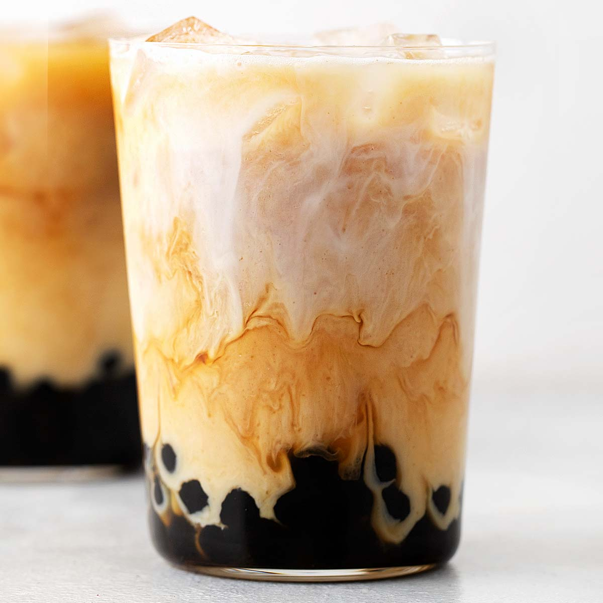
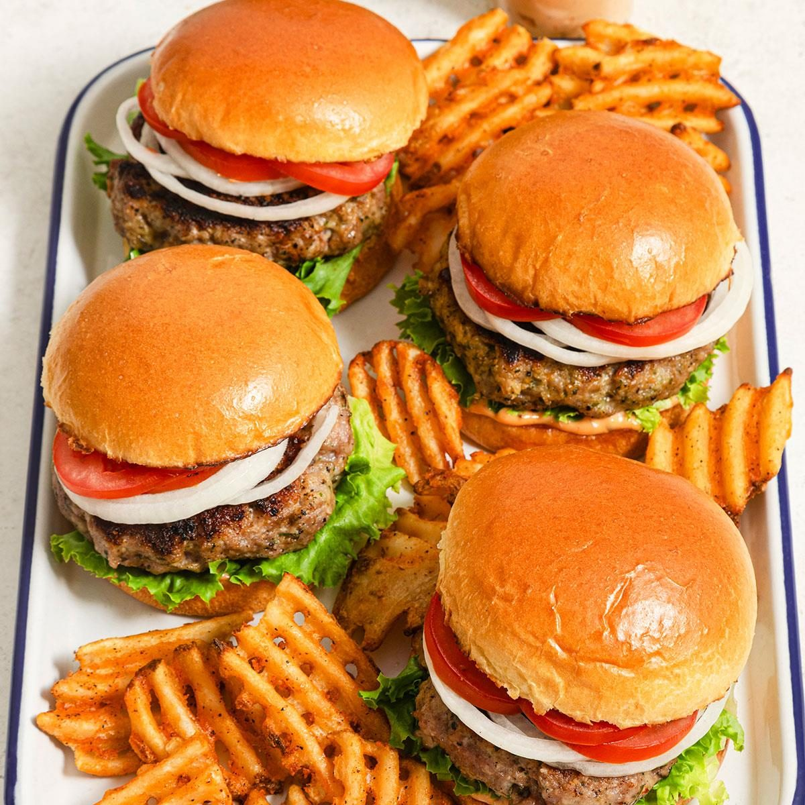
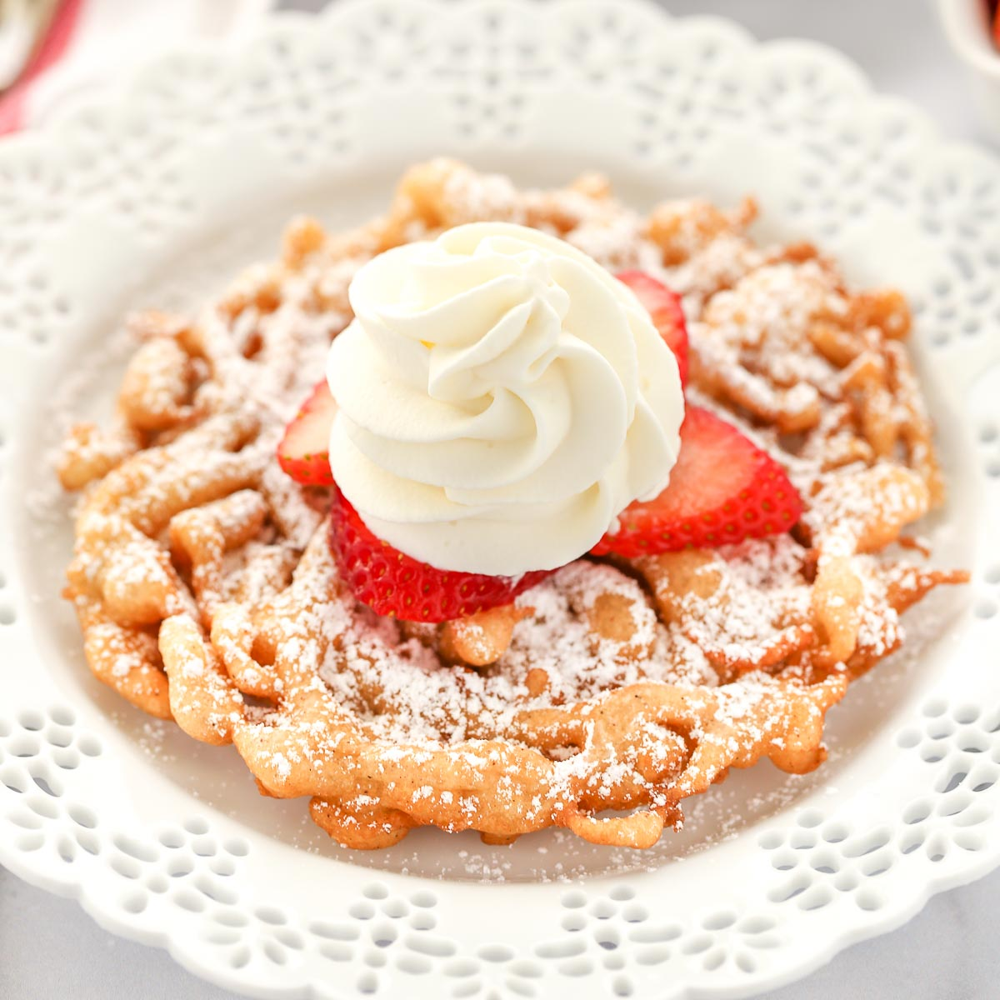

A lot of my favorite foods are the ones I have been eating all my life, mostly my mother’s cooking. I think this is because of the familiarity and nostalgia I get when I eat them. I also have a really big sweet tooth! The table below shows all of my favorite foods that I love eating.
| Meal | Favorite Foods | |
|---|---|---|
| Main | Drink | |
| Breakfast | Omelettes | Apple Juice |
| Lunch | Burgers | Bubble Tea |
| Dinner | Curry and Rice | Water |
| Dessert | Funnel Cake | Vanilla Milkshakes |
| Brownies | Chocolate Milkshakes | |


